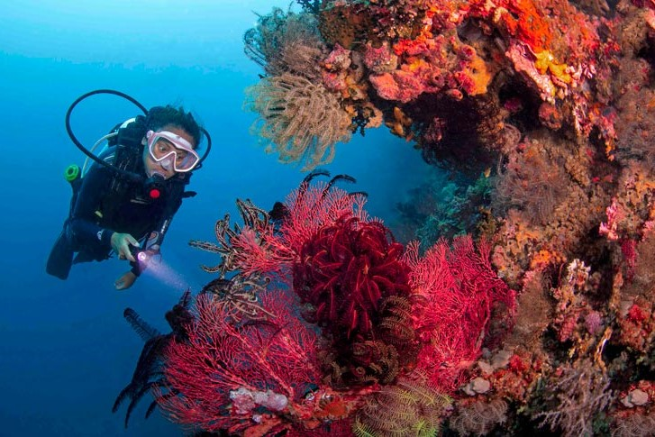
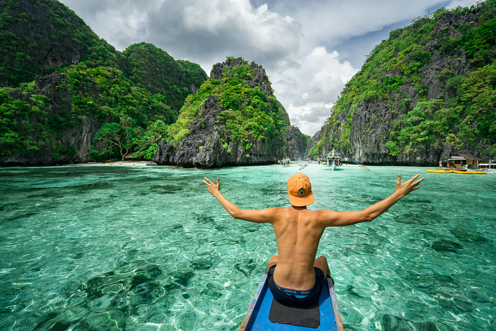
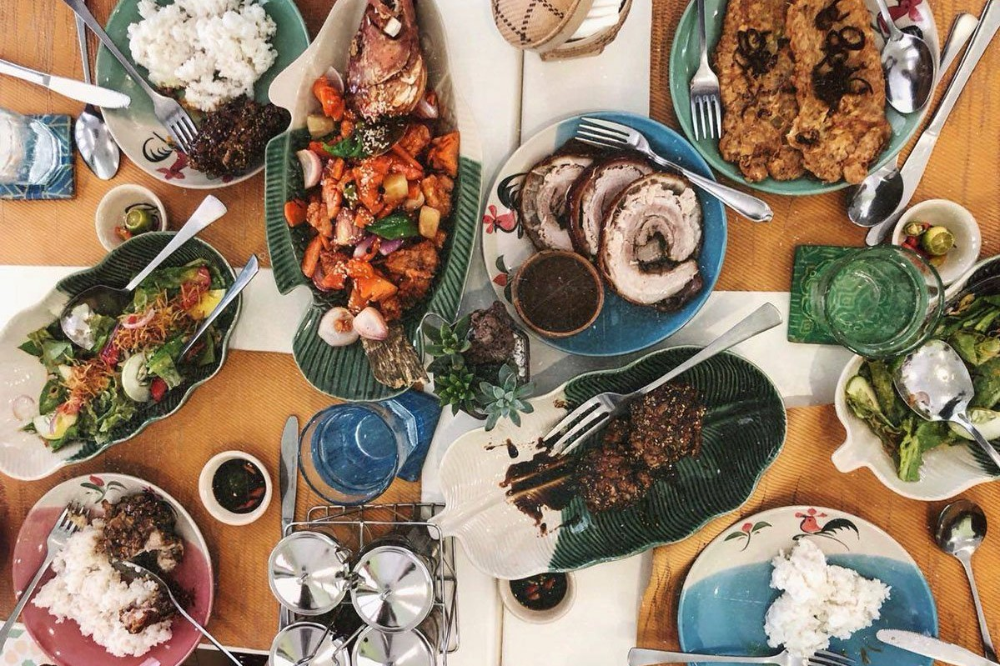

El Nido

El Nido, nestled in Palawan, Philippines, is a captivating vacation spot celebrated for its unparalleled natural beauty. The town is surrounded by the stunning Bacuit Archipelago, known for its towering limestone cliffs, turquoise waters, and pristine sandy beaches. The iconic landscape features hidden lagoons, secret coves, and breathtaking viewpoints, creating a picturesque setting for a tranquil and immersive getaway. El Nido's charm extends beyond its physical allure, encompassing a warm and welcoming atmosphere, with opportunities to explore local markets, savor traditional cuisine, and engage with the vibrant cultural heritage of Palawan. Accessible by air and sea, El Nido stands as a tropical haven where visitors can unwind amidst the serenity of its awe-inspiring surroundings.
Activities
  - Snorkeling and Scuba Diving
- Island Hopping Tours
- Local Food Tasting
El Nido, Palawan, offers exceptional scuba diving and snorkeling experiences in its renowned Bacuit Archipelago. Scuba divers can explore sites like South Miniloc and North Rock, encountering diverse marine life such as turtles and sharks. Snorkelers can enjoy the beauty of the underwater world at accessible sites like Small Lagoon and Matinloc Shrine, observing vibrant coral reefs and an array of fish species. El Nido's crystal-clear waters and rich marine ecosystems make both scuba diving and snorkeling memorable adventures, catering to enthusiasts of all levels.
Island hopping in El Nido is a must-do activity, allowing visitors to explore the breathtaking beauty of the Bacuit Archipelago. The island hopping tours, labeled A, B, C, and D, each offer a unique and enchanting experience, showcasing the diverse landscapes and marine wonders of this tropical paradise.
El Nido, Palawan, offers a diverse and delightful culinary experience with a focus on fresh seafood, traditional dishes like Kinilaw and Adobo, and unique specialties such as Tamilok and Balut. The local food scene also features sweet treats like Buko Pie and Halo-Halo. Exploring markets provides an authentic taste of El Nido's rich culinary traditions, allowing visitors to savor the coastal influence on the region's flavorful cuisine.